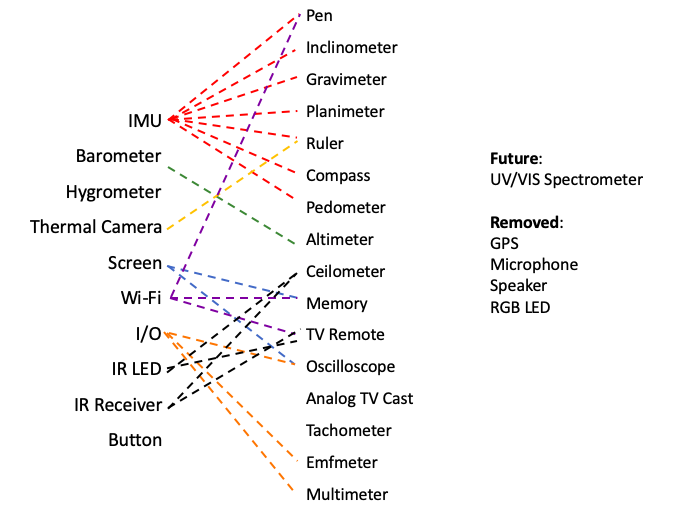
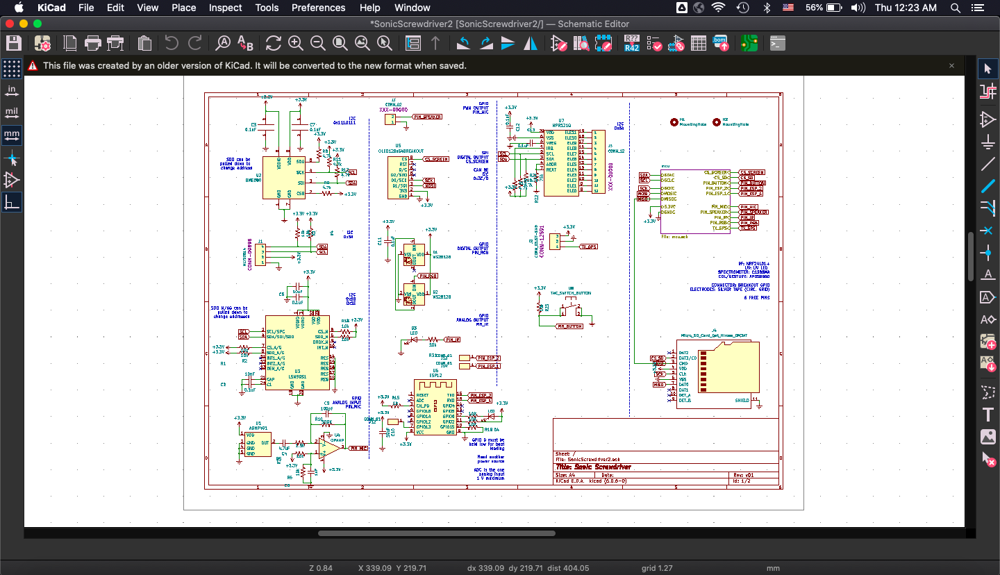

Sonic Screwdriver
(WORK IN PROGRESS)
My current project is creating a sonic screwdriver, inspired by the device (of the same name) in Doctor Who.

The goal is to have a pocket sized device with a wide array of sensors and effectors, allowing different functions to be programmed into the device. The PCB was designed in KiCAD, and fabricated by OSHPark. The case was designed in Onshape, to be 3d printed. Several openings along the case allow for the sensors to be properly exposed.
Alpha Prototype
First prototype with the functions - The development blog is documented on Hackaday.
Display and Menu
I used a webpage that allowed pixel level drawings to be turned into bitmap arrays that can easily be stored.


CAD and Enclosure
While I wait for the electronics to arrived, I decided to start working on the enclosure. The internal volume is similar to the final version of the SS.


Testing Modules
The first round of ordered modules arrived from Digikey, and I spent the better part of the weekend testing their functionality. Most of the tests I ran on the modules were simple call-and-response, or sensor reading. I discovered a website (Tinycircuits.com) which sold, unsurprisingly, tiny circuits. These are perfect for a space limited project.
Putting Everything Together
Assembled modules and wired on protoshield.


Testing function menu
Tested the "tier-1" functions of the SS, which largely comprises of scientific modules. Here's a list of modules tested, and their basic functions added:
- IMU (accelerometer, gyroscope, magnetometer)
- Hygrometer
- Barometer (and altimeter)
- Thermometer (IR and ambient)
- RGB Led
- IR Led (and receiver)
- Radio Module
- Wifi Module


Shuffling Functions Around
I decided to shuffle the functions slightly. There are a lot of basic / measurement functions on the SS, that are useful, though not all the time. Some of the functions will need additional hardware not yet purchased (e.g. C12666MA Spectrometer, or a GPS module), but I've included them for completeness sake. Here's the current break down of functions I've added:
- Pen. Still not sure what the best approach is in this case. ML models aren't supported a ATSAMD21. Other ideas like Hopfield Networks could work be implemented, though they are significantly limited in terms of memory. I could also offload the identification / classification to a server, and just have the SS record the pen strokes, but this is less fun.
- Analog Broadcast. I saw a video where an ESP8266 was used to broadcast analog tv. Might try something like that.
- Smart Home. Connecting the SS to other appliances at home, possibly using wifi router signals as positioning beacons.
IMU Pen
IThis was a submodule is part of the sonic screwdriver project. The sonic screwdriver will have a pen function, that can be used on any surface, recording IMU data, that will immediately be turned into alphabets. The prototype below was made to collect data.


Data
The pen collects motion data from the 9-axis module (accelerometer, gyroscope, magnetometer), and uploads them. The data can then be downloaded and used to train a machine learning model to determine the letter being written from the motion data. The motion data for the letter "a" is shown:


Unsupervised Learning
t-stochastic neigheborhood embeddings (tSNE) was used to learn latent structures in the data space of all recorded motion. Three letters that are similar (a, d, and g) are shown below. In the plots, show that they are similar (grouped nearby), but distinct enough that they are clustered seperately.
The final PCB board is generated with KiCAD again, and fabricated at OshPark.

PCB Schematic rev. 3, KiCad. Originally planned to use the ARM Cortex M0+ microcontroller (similar mcu to Arduino Zero's).


Repurposed "reflow oven". Marked improvement from the frying pan model.

Populated PCB solder in reflow oven; remaining will be hand-soldered. I replaced the ESP8266 with the more robust ESP-12S in this revision. This is especially useful for adding new functions over wifi and planned communication with the Raspberry Pi server.
The blog is continued on Hackaday.